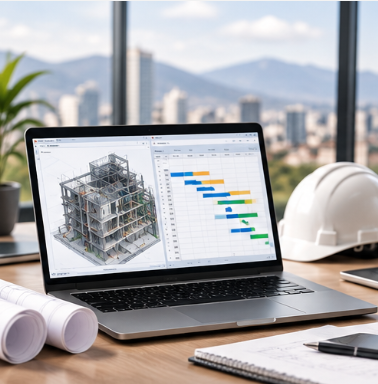
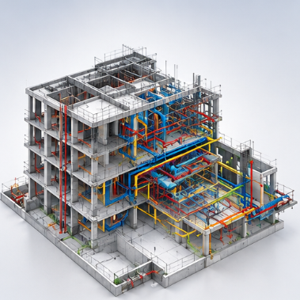
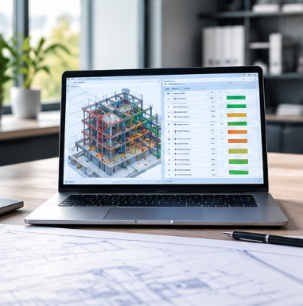
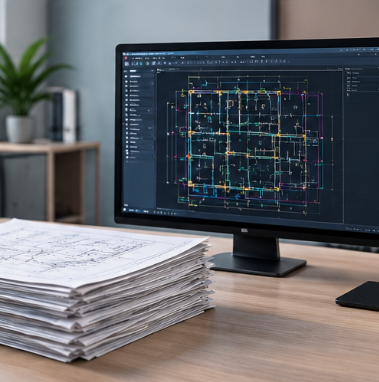
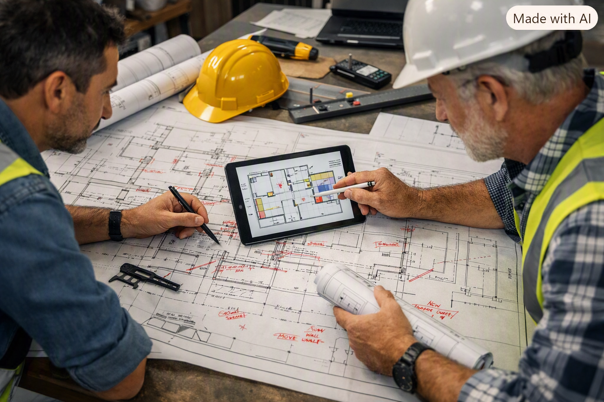
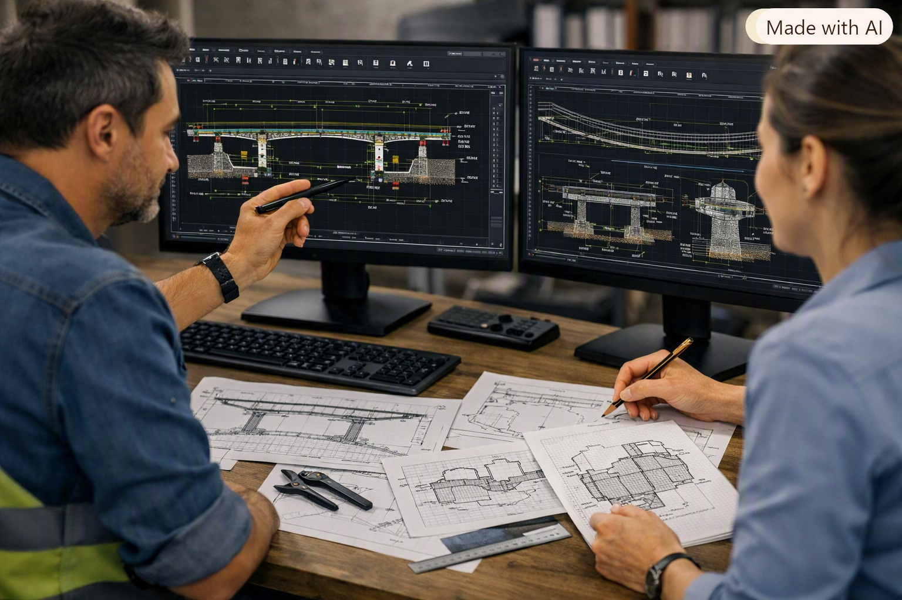

Consultoría en control de proyectos y BIM
Control de proyectos y BIM para decisiones de obra en tiempo real
Estructuro el control de tu proyecto de construcción de punta a punta —EDT, metrado, presupuesto, cronograma, avance y valor ganado (EVM)— con modelado BIM y automatización propia. Atiendo proyectos en Perú y, de forma remota, en Europa.
Servicios
Lo que resuelvo para tu proyecto
Ocho líneas de servicio que cubren desde el control integral de un proyecto nuevo hasta el expediente técnico para inversión pública.

Control de proyectos integral
Servicio completo de EDT, metrado, presupuesto, cronograma, avance y EVM para un proyecto que arranca desde cero.
ConsultarSolo control (avance + EVM)
Para clientes que ya tienen su propia planificación: seguimiento de avance en campo y tablero de valor ganado (CPI/SPI).
Consultar
Modelado y metrado BIM
Modelado en Revit (LOD 200) de estructuras y albañilería, con extracción de metrados directamente desde el modelo.
Consultar
Auditoría de gobernanza BIM
Verificación de cumplimiento ISO 19650 y trazabilidad de datos entre plataformas CDE (Autodesk Construction Cloud, Revizto).
ConsultarExpediente técnico
Elaboración de expedientes técnicos para inversión pública (Invierte.pe), coordinando especialistas colegiados por encargo cuando se requiere.
Consultar
Digitalización de planos
Conversión de planos físicos o en formato imagen a archivos vectoriales editables (CAD), listos para uso técnico.
Consultar
Planos as built
Levantamiento de redline en campo (marcado de cambios reales sobre el plano) y elaboración de los planos as built que reflejan lo realmente ejecutado en obra, para cierre y entrega del proyecto.
Consultar
Elaboración de planos en AutoCAD
Desarrollo de planos técnicos de arquitectura, estructuras e instalaciones en AutoCAD, listos para revisión y aprobación.
ConsultarPosicionamiento
Un solo interlocutor para todo el control de tu proyecto, en vez de coordinar varios proveedores.
Metodología
Cómo trabajo
Un proceso de cuatro pasos, pensado para operar igual de bien desde una obra en Lima que desde Europa.
Levantamiento
Reviso el proyecto tal como llega: modelo BIM, planos, presupuesto en Excel/S10 o cronograma en Primavera P6 / MS Project.
Modelado y metrado
Estructuras y albañilería desde Revit (LOD 200); instalaciones y partidas de proceso, metrado manual verificado.
Automatización
Presupuesto, cronograma y dashboard EVM enlazados mediante scripts propios en Python/openpyxl —trazables y auditables.
Seguimiento remoto
Reportes de avance y EVM entregados de forma periódica, sin importar si la obra está en Lima o el seguimiento se hace desde Europa.
Cobertura
Dónde trabajo
Un mismo sistema de control, adaptado a dónde está tu proyecto y a dónde estoy yo.
Perú
Obra y oficina técnica
Atención directa a proyectos de edificación e infraestructura en Lima y a nivel nacional, con visitas de campo cuando el proyecto lo requiere.
Europa · remoto
Control desde cualquier lugar
Todo el sistema —EDT, metrado, presupuesto, cronograma, avance y EVM— está diseñado para operar en remoto, pensando en clientes en España y el resto de Europa.
Sobre mí
Consultor
- +15 años en proyectos de construcción
- Función técnico-comercial y control de proyectos
- Especialización BIM aplicada a control de obra
Combino una formación en economía con una base técnica en edificaciones, algo poco común en el sector: eso me permite leer un proyecto de construcción tanto desde el número como desde la obra.
Los más de quince años trabajando en funciones técnico-comerciales y de soporte al control de proyectos me llevaron a construir un sistema propio de control —EDT, metrado, presupuesto, cronograma, avance y EVM— que hoy ofrezco como consultoría independiente bajo VINDEL Project BIM, tanto para proyectos en Perú como, de forma remota, para clientes en Europa.